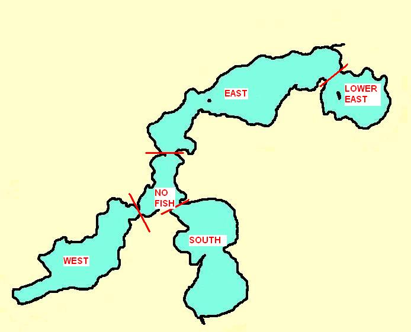

The following table reflects year by year valuvaluation and levy data since creation of the district:
The following graph depicts the growth trend in total equalized valuation over the history of the district.
NOTE: The reduction in total district valuation in 2009 & 2010 is not due entirely to the economic downturn. Prior to 2009, the district included all off-water properties within the district boundaries. The Board of Commissioners voted in 2009 to exempt off-water properties from the district unless those properties had deeded lake access. Consequently, the value of off-water properties not having deeded access was no longer included in the total valuation of the district. Had that not happened, the 2009 and 2010 total valuations may have remained at least as high as the 2008 total, if not higher.